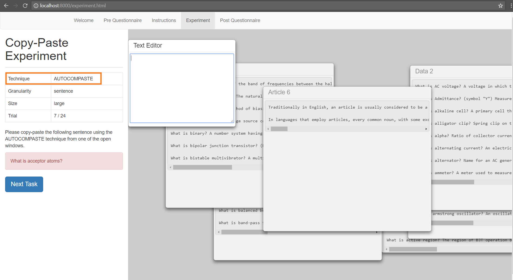

Thank you for completing the Pre Questionnaire, participant ! Please read the instructions before the experiment.

The image above is taken from the experiment that you will be performing.
The orange area shows the technique that you will be using, either the AutoComPaste method, or the traditional (Ctrl-C, Ctrl-V) method to copy and paste the text in the text frames all around the page. The window size of the text frames will either be large, as seen in the image above (500x400), or small (250x200).
Based on the table on the left, you will either be using the AutoComPaste or the traditional (Ctrl-C, Ctrl-V) technique, and the window size of the text frames from which you will be copy and pasting text from will either be large, or small.
Here is a brief explanation of how the following methods copy and paste text:
Once you have completed your task, please press the `Next Task` button on the left, as seen in the screenshot, to continue to your next trial. Once you have completed the experiment, you will be prompted to complete the Post Questionnaire survey on the `Post Questionnaire` tab, and the experiment will end.
If you have finished reading the instructions, please click on the `Experiment` tab to begin!